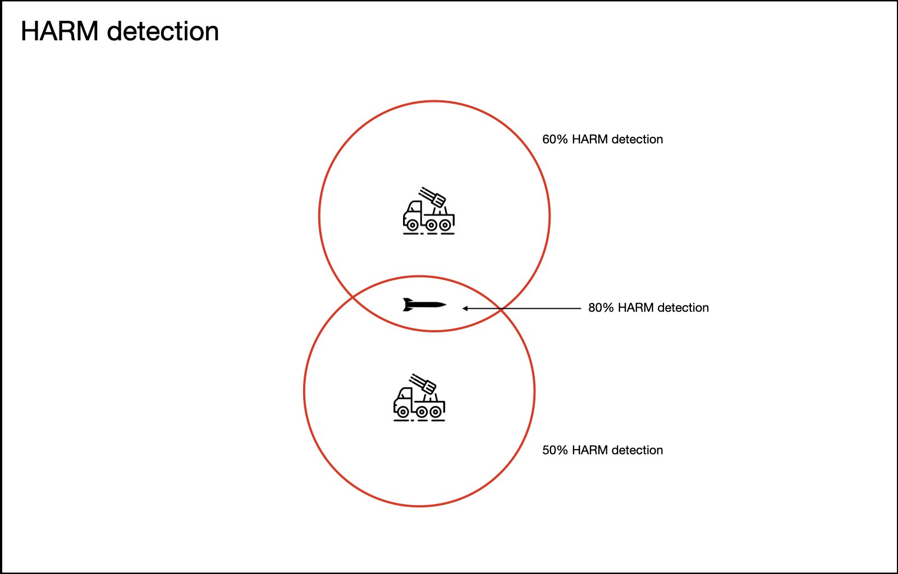
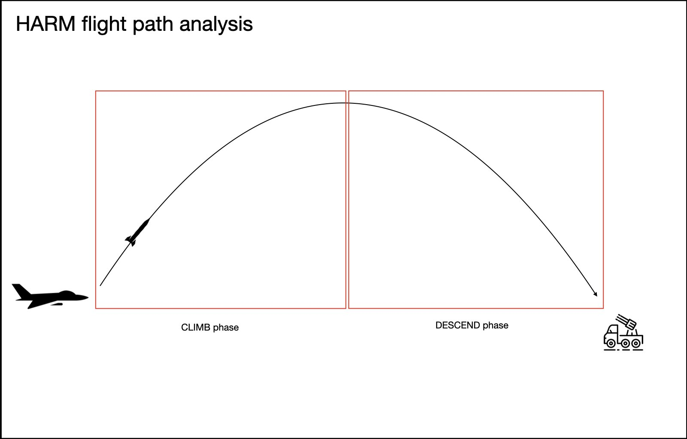
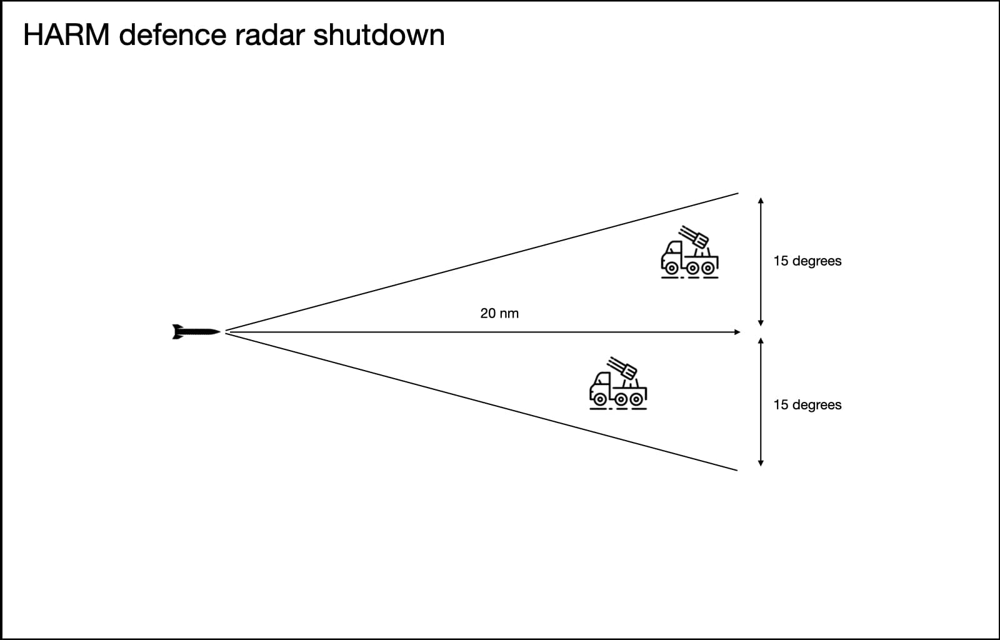

Tactique¶
Défense contre les HARM¶
Les sites SAM et les EW radars éteignent leur radar s'ils estiment qu'un HARM (High speed Anti
Radiation Missile) leur fonce dessus. Pour cela, l'IADS évalue les contacts et détermine lesquels
sont probablement des HARM.
Chaque site SAM et chaque EW radar possède une probabilité de détection des HARM. Si un HARM est
détecté par plusieurs radars, la probabilité qu'il soit identifié comme tel augmente.
Le champ harm_detection_chance de
skynet-iads-supported-types.lua
donne la probabilité de chaque système radar.
Détection des HARM¶
Admettons que le site SAM A ait une probabilité de détection de 60 % et le site SAM B une probabilité de 50 %. Si un HARM est accroché par les deux radars, la probabilité que l'IADS l'identifie est de 80 %.
Depuis la révision des surfaces équivalentes radar des HARM dans DCS 2.7, les radars anciens comme ceux du SA-2 et du SA-6 ne parviennent à identifier un HARM qu'à très courte distance, généralement moins de dix secondes avant l'impact. Ces systèmes ne se défendront pas très bien contre les HARM avec Skynet.

Analyse de la trajectoire des HARM¶
Le contact doit voler à plus de 800 kt et ne pas avoir changé de trajectoire plus de deux fois
(par exemple montée-descente, montée ou descente). Le but est de limiter les faux positifs :
un chasseur volant très vite, par exemple.

Cette implémentation est plus proche de la réalité. Des systèmes comme le Patriot, et très probablement les systèmes russes modernes, calculent la trajectoire et analysent la surface équivalente radar pour déterminer si un contact entrant est un HARM.
Une fois un contact identifié comme HARM, l'IADS éteint les radars situés dans un secteur de 15 degrés de part et d'autre de sa trajectoire, jusqu'à 20 milles nautiques devant lui. L'IADS calcule le temps avant impact et maintient les émetteurs éteints jusqu'à 180 secondes après cette échéance.
Extinction des radars face à un HARM¶
Une fois le HARM identifié par Skynet, les radars situés jusqu'à 20 NM devant lui et à 15 degrés à gauche ou à droite sont prévenus. Selon leur configuration, ils s'éteignent ou engagent la défense contre le HARM.

Défense rapprochée (point defence)¶
Lorsqu'un émetteur radar (EW radar ou site SAM) est attaqué par un HARM, il a une chance de le détecter et de s'éteindre. Si cet émetteur est le seul EW radar du secteur, les sites SAM alentour ne pourront plus s'activer, puisqu'ils dépendent de lui pour les informations de cible. C'est un problème si vous avez placé des SA-15 Tor autour de l'EW radar pour le protéger : ils resteront éteints et n'engageront pas le HARM.
Utilisez cette fonctionnalité si vous ne voulez pas que l'IADS perde sa vision de la situation à la seule arrivée d'un HARM. L'émetteur radar ne s'éteindra que s'il estime que sa défense rapprochée ne pourra pas traiter le nombre de HARM entrants. Tant qu'il reste un lanceur et un missile de défense rapprochée par HARM entrant, l'émetteur continue d'émettre. Si les HARM sont plus nombreux que les lanceurs et les missiles disponibles, l'élément protégé s'éteint. Les essais menés dans DCS montrent que le point de saturation se situe à peu près là. Si le site SAM protégé est lui-même capable d'engager des HARM, ses lanceurs et ses missiles comptent également dans ce calcul.
Voir quels systèmes SAM peuvent engager les HARM ? et l'exemple de montage d'une défense rapprochée.
Guerre électronique¶
Une forme simple de brouillage est fournie avec Skynet IADS. Elle est désactivée par défaut. Le brouillage agit en modifiant les règles d'engagement (ROE) du site SAM. Plus l'émetteur de brouillage s'approche du site SAM, moins le brouillage est efficace (burn through). Pour agir, le brouilleur doit avoir la vue directe (LOS, line of sight) sur une unité radar. Les sites SAM anciens sont plus sensibles au brouillage. Les EW radars, eux, ne sont pas brouillables à ce jour.
Je vous conseille d'ajouter une unité IA qui suit le dispositif d'attaque dans lequel vous volez et qui joue le rôle d'avion de brouillage. C'est ce qui donnera l'expérience la plus réaliste. L'émetteur de brouillage bascule les ROE du site SAM, ce qui change la façon dont celui-ci réagit à toutes les menaces, proches comme lointaines.
Je pars du principe qu'un aéronef très proche d'un site SAM brouillé par un émetteur très éloigné serait selon toute vraisemblance détecté. Autrement dit, plus vous êtes loin de la source du brouillage, moins votre expérience sera réaliste.
Voici la liste des sites SAM actuellement pris en charge par le brouilleur, avec l'efficacité du brouillage sur chacun. Au montage, vous décidez quels sites SAM le brouilleur est capable de brouiller. Vous pouvez par exemple concevoir une mission où il ne peut rien contre un SA-6, mais brouille un SA-2. L'efficacité du brouilleur ne repose sur aucune donnée réelle : elle vient de lectures sur les différents systèmes et des conclusions que j'en ai tirées.
Voici un documentaire à l'ancienne montrant le Prowler en action. Le briefing prévoit d'allumer les équipements de brouillage à 60 NM de l'objectif. Ce devait être la portée efficace des techniques de brouillage des années 70.
Voir ajouter un brouilleur pour le montage.